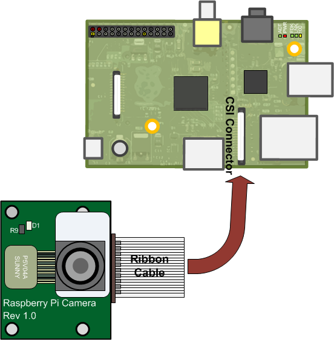
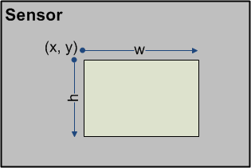

Working with Raspberry Pi Camera Board
This example shows you how to capture and process images from Raspberry Pi® Camera Board module using the MATLAB® Support Package for Raspberry Pi Hardware.
Contents
Introduction
The Raspberry Pi Camera Board is a custom designed add-on module for Raspberry Pi hardware. It attaches to Raspberry Pi hardware through a custom CSI interface. The sensor has 5 megapixel native resolution in still capture mode. In video mode it supports capture resolutions up to 1080p at 30 frames per second. The camera module is light weight and small making it an ideal choice for mobile projects.
In this example you will learn how to create a cameraboard object to connect to the Raspberry Pi Camera Board, capture images from the camera and process them in MATLAB.
Prerequisites
- We recommend completing docid:raspberrypiio_examples.example-raspi_gettingstarted Getting Started with MATLAB Support Package for Raspberry Pi Hardware> example.
Required Hardware
To run this example you will need the following hardware:
- Raspberry Pi hardware
- A power supply with at least 1A output
- A Camera Board
Connect Camera Board
The camera board attaches to the Raspberry Pi via a ribbon cable. One end of the ribbon cable goes to the camera PCB and the other end attached to Raspberry Pi hardware itself. You need to get the ribbon cable connections the right way, or the camera will not work. On the camera PCB, the blue backing on the cable should be facing away from the PCB, and on the Raspberry Pi hardware it should be facing towards the Ethernet connection.

Create a Camera Board object
Create a camera board object by executing the following command on the MATLAB prompt.
clear rpi rpi = raspi(); cam = cameraboard(rpi,'Resolution','640x480');
The cam is a handle to a cameraboard object. Let's display the images captured from Raspberry Pi Camera Board in MATLAB.
for i = 1:100 img = snapshot(cam); image(img); drawnow; end
Inspect object properties
The MATLAB command line interface for Camera Board has a number of properties that expose the features of the Camera. To view the properties of the cameraboard class type the following on the MATLAB prompt.
cam
Using the properties of the cameraboard object, you can flip the images horizontally or vertically, change image quality parameters such as brightness, contrast, saturation and sharpness and access advanced camera features such as image stabilization and image effects. The Resolution and FrameRate properties cannot be changed after instantiation. If you want to change these properties, clear the cameraboard object from MATLAB workspace and create a new object by specifying the new Resolution and FrameRate parameters.
clear cam cam = cameraboard(rpi,'Resolution','320x240','FrameRate',30);
Other properties of the cameraboard object can be changed at any time. But it takes 5 frames for the new setting to take effect. Let's try flipping the image horizontally.
figure(1); for i = 1:5 img = snapshot(cam); end image(img); cam.HorizontalFlip = true; for i = 1:5 img = snapshot(cam); end figure(2); image(img);
Image effects
Let's try a simple image inversion algorithm on the images captured from Raspberry Pi Camera Board.
figure(1); for i = 1:100 img = snapshot(cam); img = 255 - img; image(img); drawnow; end
The image inversion creates a color negative effect. The Raspberry Pi Camera Board itself can invert the images by setting ImageEffect property to 'negative'.
figure(1); cam.ImageEffect = 'negative'; for i = 1:100 img = snapshot(cam); image(img); drawnow; end
Here is a more interesting image effect.
figure(1); cam.ImageEffect = 'sketch'; for i = 1:100 img = snapshot(cam); image(img); drawnow; end
Digital zoom
Raspberry Pi Camera Board allows a region of the sensor to be used as the image capture area. This region, called region of interest (ROI), is specified as a normalized vector [x y w h] where x, y defines the top left corner and w and h specifies the width and height.

Reducing ROI while holding the output image size constant results in a digital zooming effect. The following MATLAB code varies the x and y parameters of the ROI to zoom into the lower right part of the sensor. The approximate area of the sensor being captured is indicated by a red rectangle.
figure(1); roi = [0 0 1 1]; cam.ROI = [0 0 1 1]; for i = 1:10 img = snapshot(cam); end subplot(211); image(img); drawnow; rect = rectangle('Position',[1 1 320 240]); rect.EdgeColor = 'red'; for i = 1:200 img = snapshot(cam); if i > 20 fc = (i - 5)*0.0025; roi(1:2) = [fc, fc]; roi(3:end) = [1-fc, 1-fc]; cam.ROI = roi; subplot(211); rect.Position = roi.*[320 240 320 240]; drawnow; subplot(212); image(img); drawnow; end end
Record Video
You can record video using the MATLAB command line interface for Raspberry Pi Camera Board. You start recording video by executing the record command. The record command returns to the MATLAB command prompt immediately after execution and does not wait for the entire video to be recorded. During video recording, images captured by the Camera Board are saved to a file on the Raspberry Pi hardware in raw H264 format. After video recording is complete, you can bring the video file to your host computer for playback. You cannot take snapshots while video recording is in progress. Since the recorded video is in raw H264 format, most players cannot play the video file directly. The recorded H264 stream must be converted to an appropriate format, such as an MP4, before you can play it back or load it in MATLAB.
Execute the following on the MATLAB command prompt to record video to a file called 'vid.h264' for 30 seconds.
record(cam,'vid.h264',30)
The record command starts video recording. It does not block the MATLAB command prompt. You can perform MATLAB operations while video recording is in progress. However, you cannot take snapshots from the camera. To check if the recording is complete, use the Recording property of the cameraboard object.
cam.Recording
This property returns false when recording is completed. If you want to stop the video recording at any time, use the stop method of the cameraboard object.
Bring the recorded raw H264 video stream to your host computer.
getFile(rpi,'vid.h264')
The raw H264 stream needs to be converted to a video file format, such as MP4, before you can play it in a media player or load it in MATLAB. You can use FFmpeg™ to convert the raw H264 to an MP4 video file. Install FFmpeg to your host computer using the appropriate download links in the ffmpeg.org web site following appropriate installation instructions. After you install the FFmpeg, define a MATLAB variable storing the install location. For example:
ffmpegDir = 'C:\ffmpeg-20140218-git-61d5970-win32-static'
Replace the path above with the appropriate FFmpeg installation path in your computer. To create an MP4 video file out of the raw H264 stream you captured, execute the following on the MATLAB command prompt.
cmd = ['"' fullfile(ffmpegDir, 'bin', 'ffmpeg.exe') '" -r 30 -i vid.h264 -vcodec copy myvid.mp4 &']; [status, message] = system(cmd)
After FFmpeg completes video conversion, you end up with an MP4 video file that you can play in a media player. You can also load the video to MATLAB for processing. To play the captured video in MATLAB, execute the following on the MATLAB command prompt.
vid = VideoReader('myvid.mp4') for k = 1:vid.NumberOfFrames image(read(vid, k)); drawnow; end
Summary
This example introduced the workflow for using MATLAB Support Package for Raspberry Pi Camera Board.